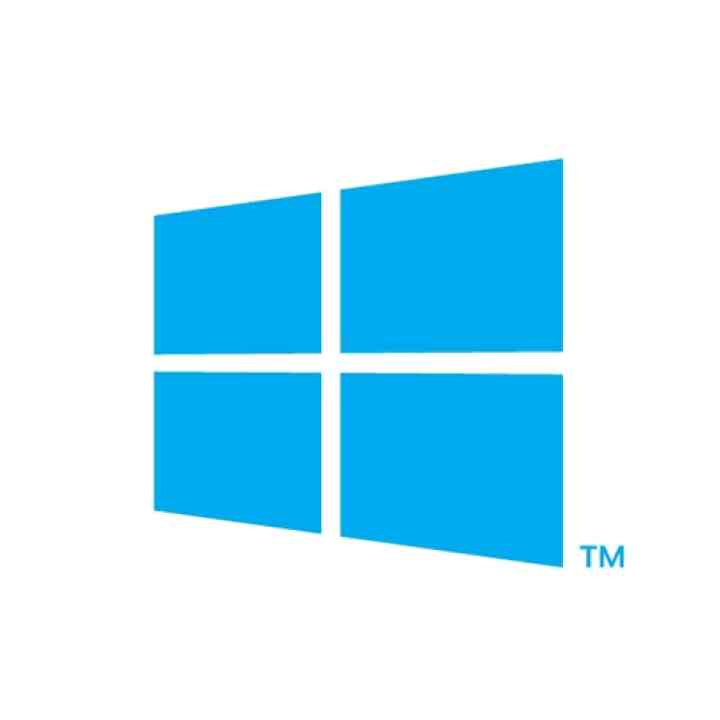
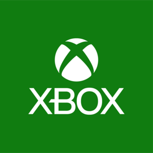
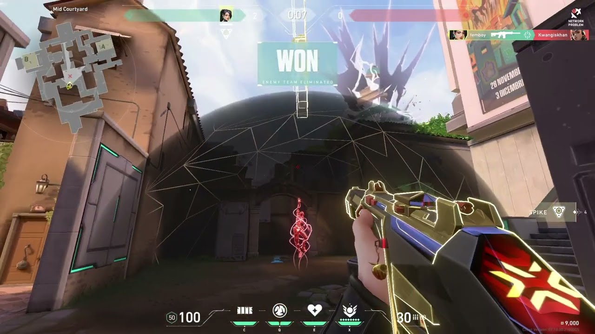
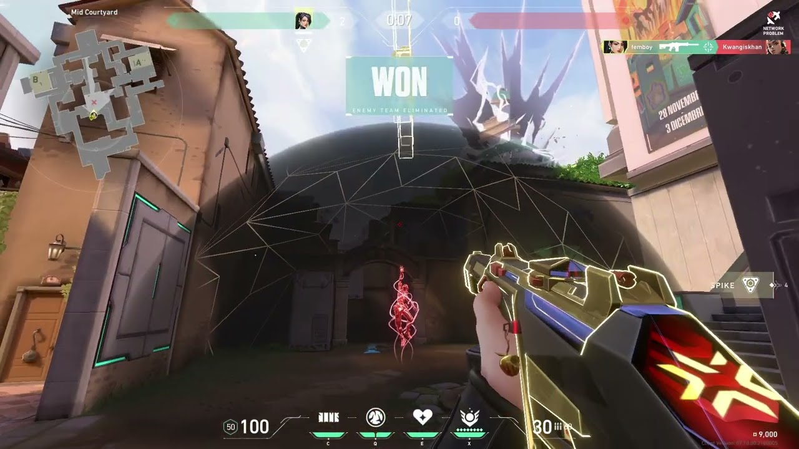

VALORANT
Valorant es un shooter táctico en primera persona de estilo hero shooter, desarrollado y publicado por Riot Games. El desarrollo del juego comenzó en 2014,
y fue anunciado bajo el nombre en clave Project A en octubre de 2019. La beta cerrada, con acceso limitado, se lanzó el 7 de abril de 2020, y el juego fue lanzado oficialmente el 2 de junio de 2020. Inicialmente,
Valorant estaba diseñado exclusivamente para Windows, pero en junio de 2024 se añadió soporte para las consolas Xbox Series X/S y PlayStation 5, aunque sin la posibilidad de juego cruzado entre jugadores de PC y consola.
¿Cómo se juega?
El modo principal de juego enfrenta a dos equipos de cinco jugadores cada uno, que asumen los roles de atacantes o defensores. Los agentes poseen habilidades únicas y emplean un sistema económico para adquirir habilidades y armas.
El juego ofrece una amplia variedad de armas, desde pistolas y subfusiles hasta escopetas, ametralladoras, fusiles de asalto y rifles de francotirador.
Recuerda que lo puedes encontrar en las siguientes pltaformas.


 

Haz click aquí para saber más del juego y descargarlo. Diviertete!